05. Prototype

A mobile application that gives residents quick access to waste collection schedules in their local area. The redesign focused on bringing clarity to a dense calendar, making it easy to scan upcoming pickups at a glance.
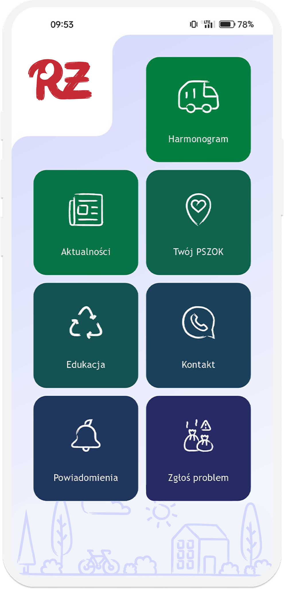
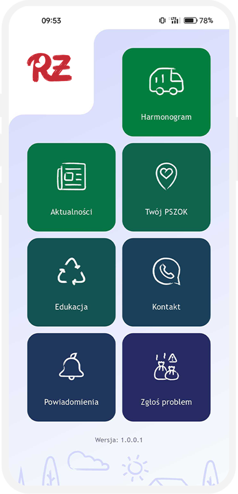
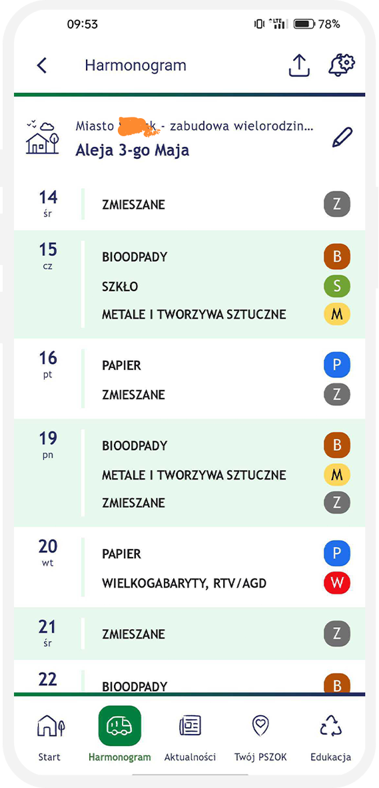
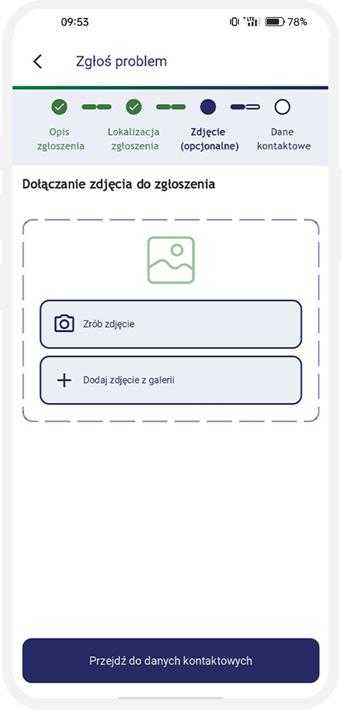
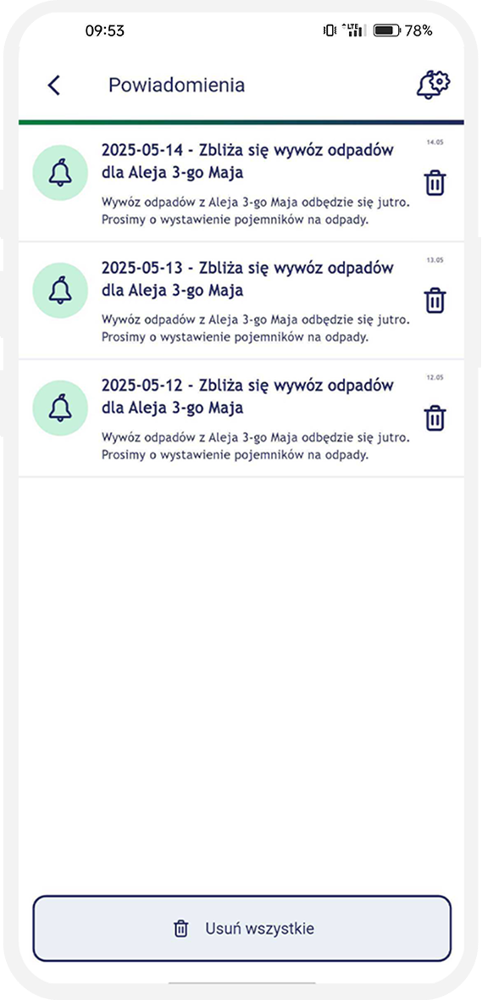
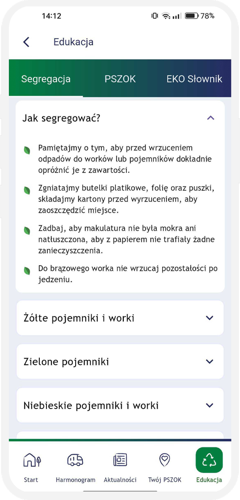
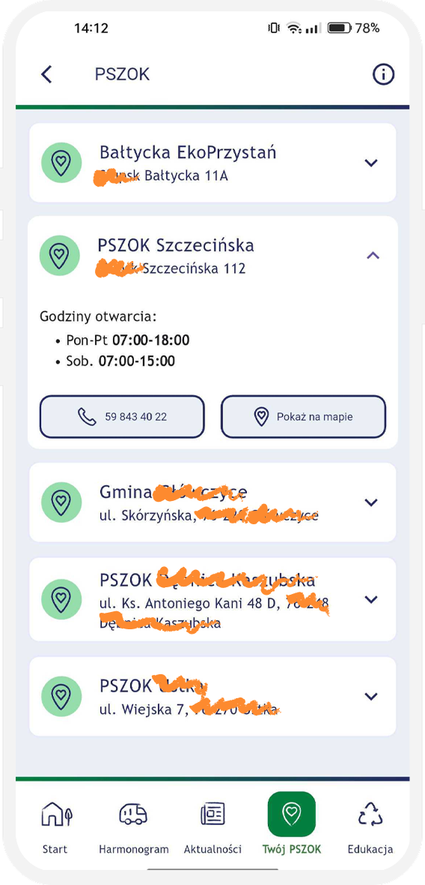
The unintuitive interface and technical glitches of the legacy application caused user frustration, effectively discouraging them from regularly checking the waste collection schedule.
The city's municipal waste management system involves multiple waste categories, each with its own collection cycle. Schedules vary across districts and even down to specific individual addresses. Previously, residents had to manually save PDFs, check printed timetables on local bulletin boards, or call the city office directly.
Furthermore, the legacy app discouraged user adoption due to a lack of push notifications for upcoming collections, combined with an inconsistent and impractical UI/UX design. The redesign brief was to preserve the underlying data structure while completely overhauling the surrounding user experience and introducing essential features.
Residents don't want a calendar. They want to know what to put out tonight.
A scan of three direct competitors (other Polish municipal waste apps).
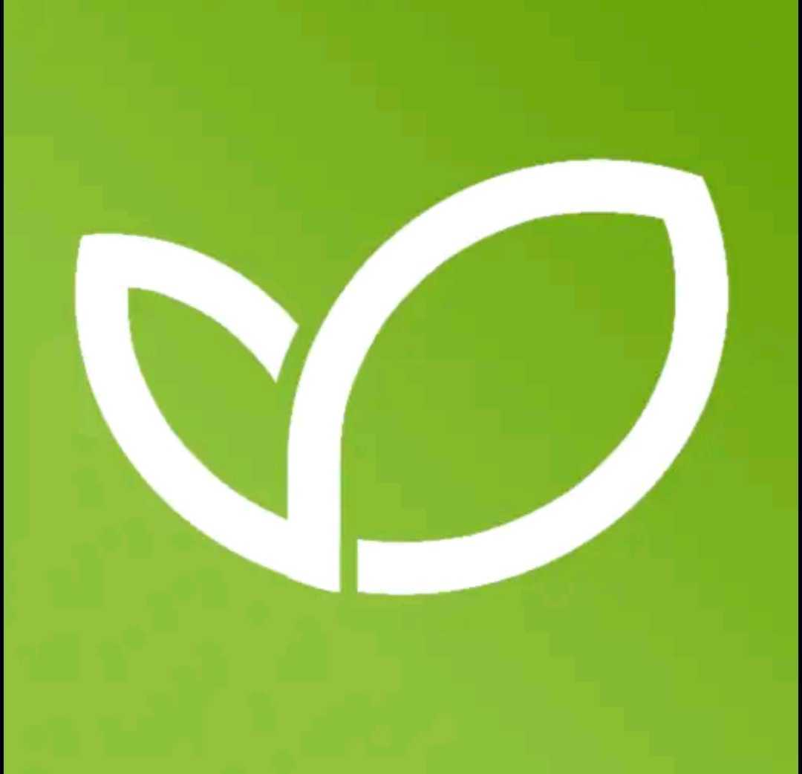
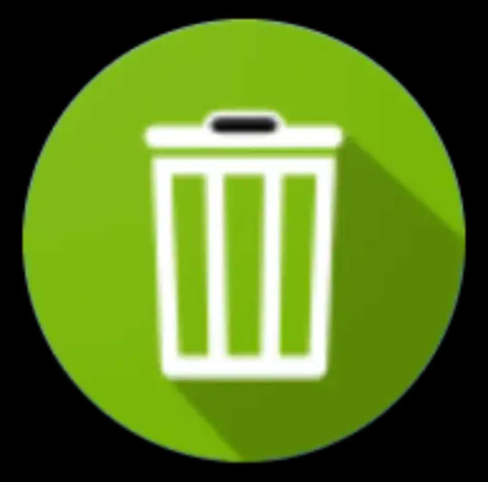
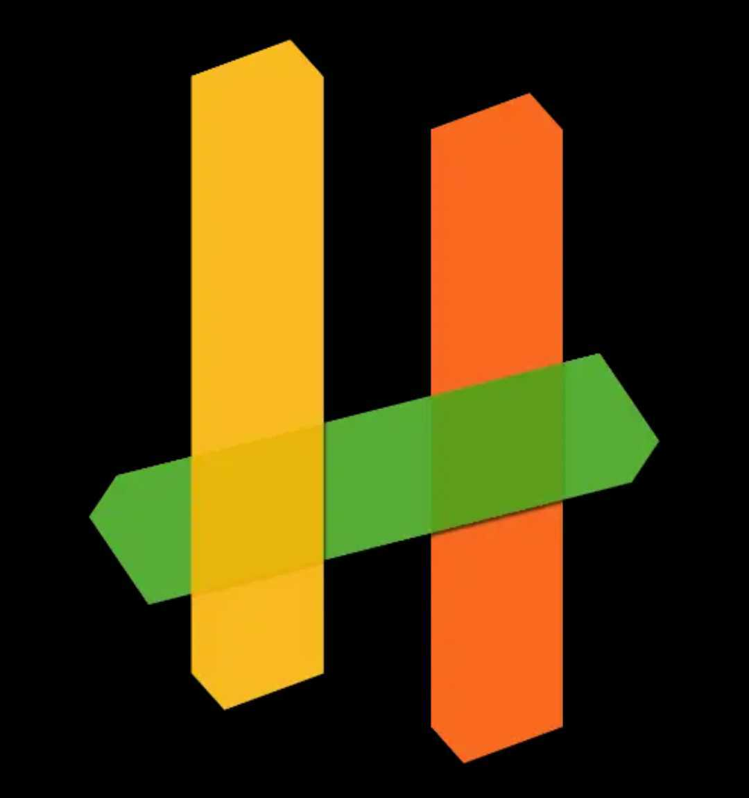
All direct competitors present the collection schedule as a scrollable list — not as a calendar.
Three opportunities emerged: (1) surface the next pickups front-and-center, (2) use color coding consistent with the physical bin colors, and (3) allow residents to receive a push notification the day before pickup.
If the data looks confusing, users assume it's also wrong.
The schedule should answer "is it tonight?" in two taps or less.
Residents want a reminder the day before pickup.
The app should comply with WCAG standards.
I sketched the screens for the schedule, news, notification display, the "Report a problem" section, and the "Education" section.
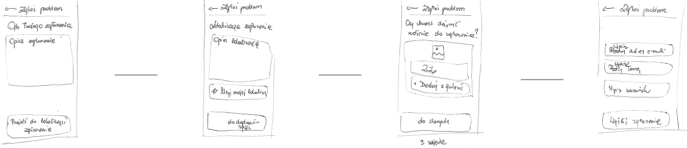
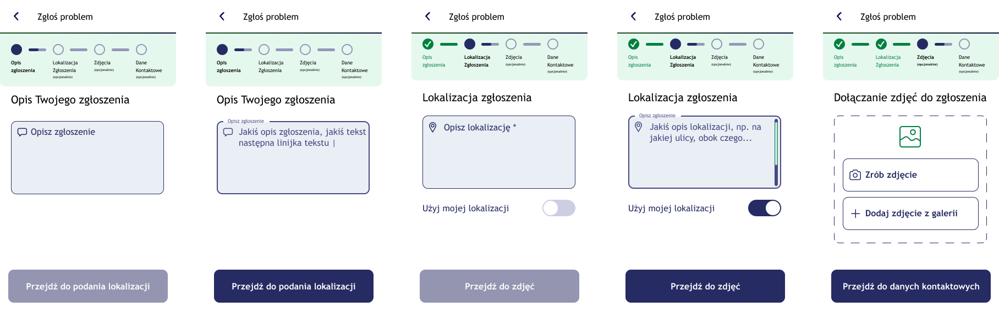
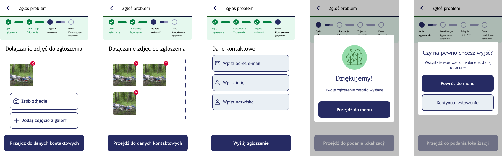
During the design of the visual layer, accessibility was a key consideration.
To maximise the intuitiveness of the schedule-checking module, a comparative usability test (A/B test) was carried out.
The study set out to verify which form of presenting the data better answered the user's key need: "I want to quickly find out what waste I have to put out, and when."
Variant A: a classic monthly calendar view with the pickup days marked.
Variant B: a linear, chronological list (feed) showing only the upcoming pickup dates.
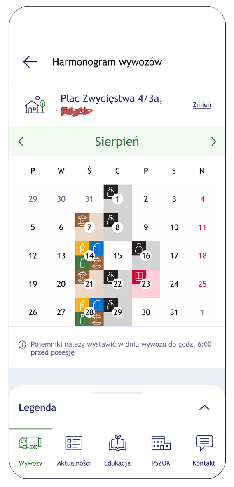
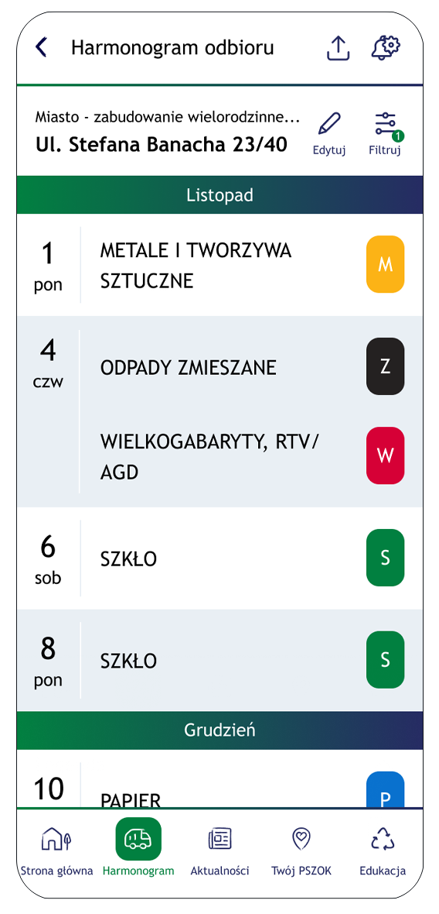
Although the initial hypothesis assumed the calendar view would give better temporal context, testing challenged that assumption. The list view turned out to be clearer and more intuitive, for a few key reasons:
Based on the data gathered, the decision was made to implement Variant B (the list view) as the default way of presenting the schedule.